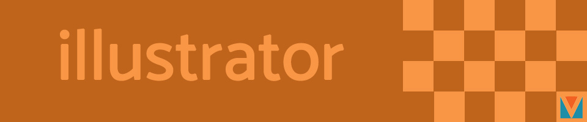
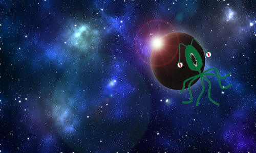

Home | Photoshop | Illustrator | Time Base Media | InDesign | Contact

raster background and type. I read the course reader to get full instructions and found that apparently we had option one and option b, something I didn’t hear about in class (Maybe I was not paying attention). Anyways, in the confusion my vector final project was a disaster, so I just quickly made a character using illustrator and as background I’ll be using galaxy composition I made for my final Color class.